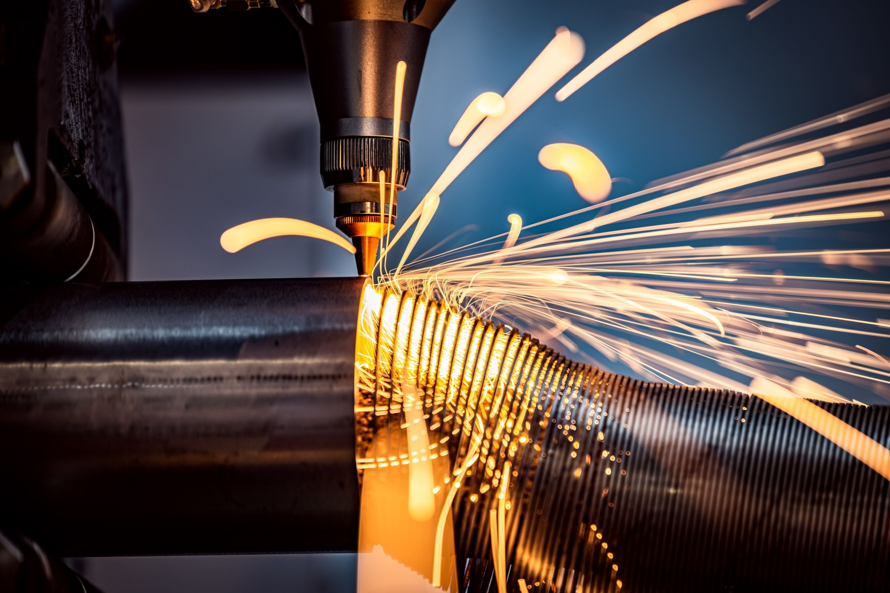

수시간 내로 완성되는 제조 AX 솔루션
솔루션
현장 데이터를 운영 화면과 AI 분석으로 연결합니다.
품질, 생산, 설비, 에너지 데이터를 한 흐름에서 확인합니다.
아직도 눈으로 보고 직접 기록하시나요? 매일 반복되는 수기 관리, 예상치 못한 돌발 이상, 어디서부터 잘 못 됐는지 알 수 없는 품질 불량 ··· 이제 눈으로 보는 관리에서 데이터 기반 관리로, 경험 의존 판단에서 AI 분석 기반 판단으로 전환해 보세요. 노코드 AIOps 데이터 인프라 경험 의존 판단에서 AI 분석 기반 판단으로 전환해 보세요. 컨포트랩의 데이터 인프라 기술은 기존 AX/DX 방식에서 가장 많은 시간을 소모하는 엔지니어링 방식을 혁신하고 데이터 인프라 통합·백엔드 서버 개발·현장(설비+게이트웨이) 연동을 한 번의 노코드 설정으로 3MD 이하로 줄입니다.
적용 사례
제조·물류·모빌리티·에너지⋯
다양한 분야와의 지속 가능한 협력을 지향합니다. 적용 사례 바로가기

레퍼런스
인력 의존 제조 운영을 디지털·AI 기반으로 전환한 사례
소식
컨포트랩 뉴스와 제조 AI 업데이트
뉴스
뉴스 보기
Investors | Partners
중소공장을 위한 합리적인 스마트 제조 혁신, 지금 시작하세요.
매쉬업벤처스 초기 투자, 카카오벤처스 프리 시리즈A, CES 혁신상과 제조 AI 보도를 실제 기사 링크로 확인할 수 있습니다.